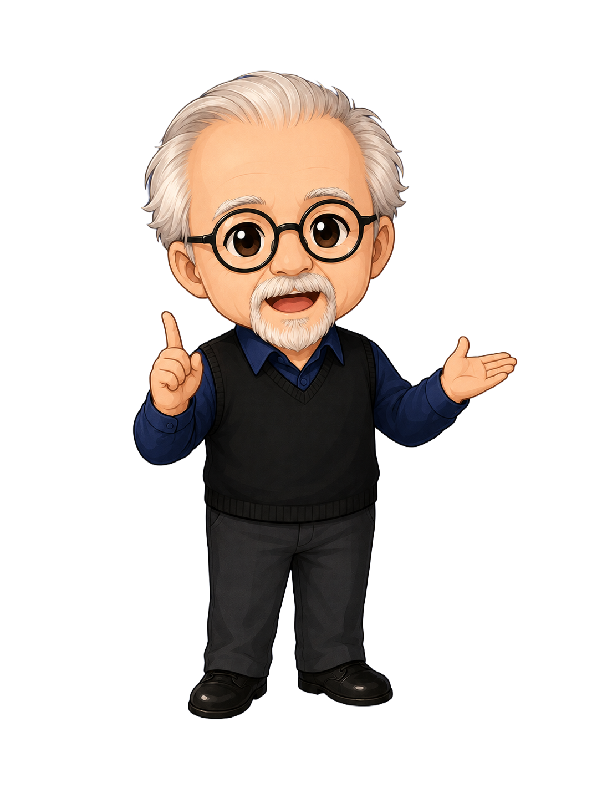
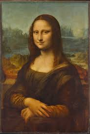

El Volumen de
Botero
Hola. Soy El Volumen de Botero.
Ponte los auriculares y conéctate con el arte.
El Volumen de
Botero
Museo de Botero
¿Qué obra tienes frente a ti? o
¿cuál obra te gustaría indagar?
Puedes hablar o escribir: “Monalisa”, “Los músicos”, “La familia” o “Bailando en Colombia”.
Obra Identificada
Monalisa

Prueba diciendo o escribiendo
“Háblame de la obra”
“¿Quién es el autor?”

Toca el micrófono o abre el chat para preguntar por la obra.
Comparación
Botero vs. Da Vinci
Monalisa
Botero, 1978
Botero, 1978

Añade la imagen:monalisa_davinci.jpg
Monalisa
Da Vinci
Da Vinci
Es un homenaje. A diferencia de Da Vinci, Botero añade volumen extremo y cambia el fondo italiano por montañas verdes que evocan a Colombia.